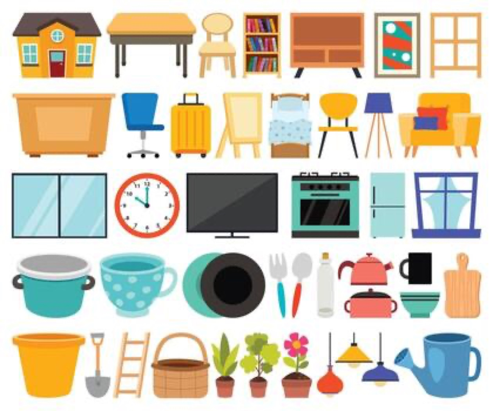

09 · Bonus: images · 4 / 6
Is it there? Where is it?
Dozens of objects, one prompt

A clock
The prompt
A clock
where: box("A clock")
top 0.44 · bottom 0.57 · left 0.23 · right 0.36
confidence
0.93
found: noul("The image contains: A clock")
0.99
0 · not there
1 · surely there
Why ask? A box always comes back
label = found >=
0.5
? prompt :
"not found"
;
Same picture,
"a cat"
: a box anyway, found
0.01
→
not found
A box always answers.
Ask if it's there.